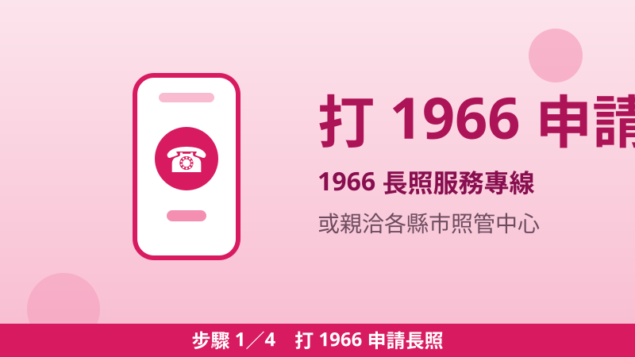
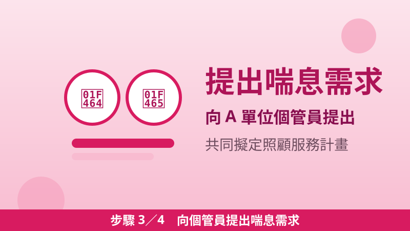
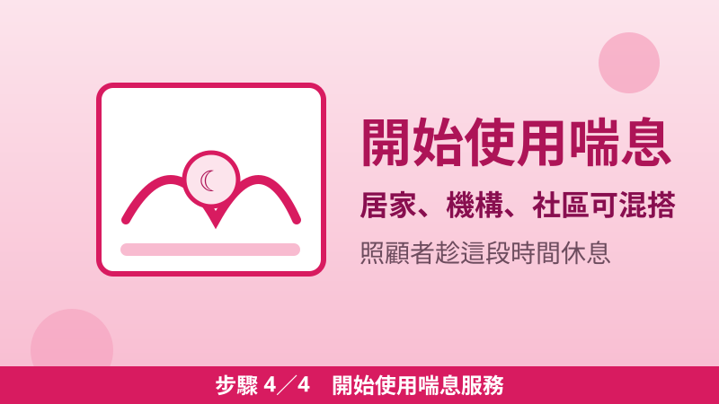

長照喘息服務怎麼用？每年最高 48,510 元，讓主要照顧者好好休息
在家照顧長輩是一場馬拉松：每天餵飯、翻身、陪就醫，照顧者自己先累倒，長輩也沒人顧。長照裡有一項服務正是為了解決這個問題——喘息服務。它不是給現金，而是政府在每年額度內，幫你把照顧工作暫時交給專業人員或機構，讓主要照顧者能休息、辦事、看醫生。很多人已經通過長照評估、正在用居家服務，卻不知道自己還有一包喘息額度沒用。
32,340 元起・第 7、8 級 48,510 元
誰能申請喘息服務
- 先決條件：經各縣市長期照顧管理中心評估，長照需要等級為第 2 級以上（第 2–8 級）。還沒申請長照的人，先打 1966 走完整申請流程（見文末四步驟）。
- 已經在用長照服務：有喘息需求時，向社區整合型服務中心（A 單位）的個案管理員提出，由個管員協助連結服務單位——喘息要寫進照顧服務計畫裡，不是自己直接去機構排隊就能用。
- 家裡有聘外籍看護工：外籍看護工請假休息時，也可以申請喘息服務，補上照顧空窗（衛福部長照專區問答明載）。
三種方式＋支付價格（衛福部官方現行價格）
| 喘息方式 | 內容 | 支付價格 |
|---|---|---|
| 居家喘息 | 受過訓練的照顧服務員到家中照顧，協助如廁、沐浴、穿換衣服、進食、服藥、翻身、拍背等 | 770 元／2 小時 |
| 機構喘息 | 到住宿式長照機構短暫停留，24 小時照顧，含護理照護、沐浴、進食、服藥、活動安排 | 2,310 元／24 小時 |
| 社區喘息（日間照顧中心） | 白天到日間照顧中心接受照顧、停留 | 1,250 元／全日、625 元／半日 |
| 社區喘息（小規模多機能夜間） | 夜間到小規模多機能服務中心（下午 6 點至翌日上午 8 點） | 2,000 元／夜 |
| 社區喘息（巷弄長照站） | 到巷弄長照站接受照顧、停留 | 170 元／1 小時 |
離島及原住民地區支付價格加計 20%。官方明載：三種方式可依需要選擇適合的模式，或採混合配搭使用——不必整年只用一種。
每年額度大概能換幾次？（試算，未扣自付）
把年額度除以支付價格，就能估出一年大約能用幾次。下表是「額度全數用在同一種方式」的試算，實際使用還要依你的自付比率扣掉自付額（第一類政府全額補助、第二類自付 5～10%、第三類自付 16～30%）。
| 年額度 | 機構喘息（2,310 元／天） | 日照全日（1,250 元／日） | 居家喘息（770 元／2 小時） |
|---|---|---|---|
| 第 2–6 級：32,340 元 | 14 天 | 約 25 日 | 42 次（84 小時） |
| 第 7、8 級：48,510 元 | 21 天 | 約 38 日 | 63 次（126 小時） |
舉個實際用法：第 6 級家庭一年 32,340 元額度，家屬一年安排兩次出遠門，每次用機構喘息 5 天（2,310 × 10 = 23,100 元），剩下 9,240 元還能換 12 次居家喘息 2 小時（770 × 12 = 9,240 元），剛好用完。額度按年計算，沒用完不會累積到下一年。
四步驟：把喘息排進照顧計畫

步驟 1打 1966 申請長照
電話直撥 1966 長照服務專線，或親自洽詢居住地縣市政府長期照顧管理中心，也可以在住院期間洽詢醫院出院準備服務小組。還沒申請長照的人從這一步開始；已經在用長照服務的人，直接找你的 A 單位個管員（跳到步驟 3）。
步驟 2照管專員到府評估
照管中心受理後，照顧管理專員會安排訪視及評估，確認長照需要等級（第 2–8 級）與給付額度。等級決定你的喘息年額度是 32,340 元還是 48,510 元。

步驟 3向個管員提出喘息需求
經評估符合等級後，A 單位個管員會與個案及家屬共同討論、擬定照顧服務計畫。這時明確說出喘息需求與想用的方式，由個管員協助連結服務單位。

步驟 4開始使用，照顧者休息
由長照服務特約單位提供服務。服務期間照顧者安心休息。日後搬到別縣市，先告知原 A 單位個管員辦移交，再由新縣市 A 單位媒合，服務才不會斷。
三個提醒，用之前先知道
- 不要等到撐不住才申請：評估、擬計畫、媒合單位都需要時間。照顧負荷開始變重時就先打 1966，讓額度先核下來、排進計畫，真的需要休息那天才派得上用場。
- 自付比率先問清楚：同一種服務，不同家庭自付不同（全額補助／5～10%／16～30% 三類）。排計畫時請個管員先算給你看，年度總自付大約多少，心裡有數再排。
- 先看四包錢總表再排：喘息只是四包錢其中一包，照顧、交通、輔具三包各有額度，怎麼搭配最划算，見〈長照四包錢金額表（2026）〉；還沒申請長照的人，先看〈長照 2.0 申請教學：打 1966 專線、四步驟、在家就能評估〉。
📎 資料來源
- 衛生福利部長照專區「喘息服務」（申請及服務流程、三種服務方式、照顧組合及支付價格、離島及原住民地區加計 20%、可混合配搭使用）：1966.gov.tw
- 衛生福利部長照專區「申請長照服務」（長照需要等級 2 級以上、給付額度表：喘息每年 32,340 元／第 7、8 級 48,510 元、自付三類、外籍看護工請假時可申請喘息）：1966.gov.tw
最後查證日期：2026-10-31
免責聲明：本文僅供參考，申請流程、資格與給付額度以政府官方最新公告及照管中心評估核定為準；額度換算表為本站試算（未扣自付），實際可用次數以照顧服務計畫核定為準。